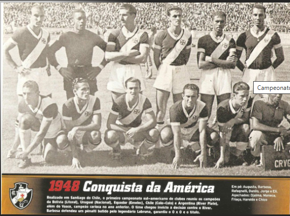
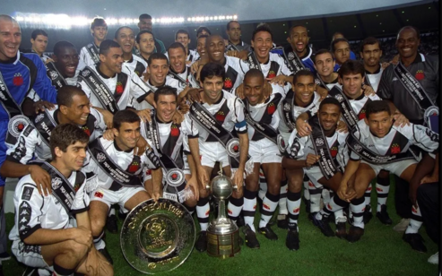
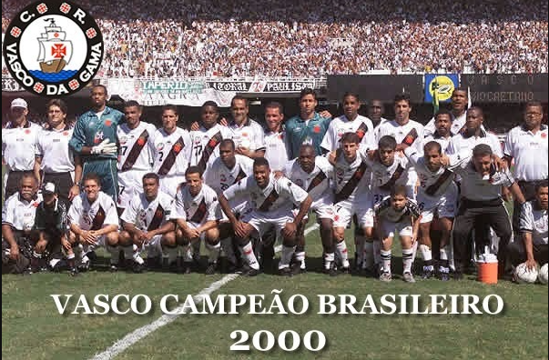

Vasco foi campeão do Campeonato Carioca de 1923. A disputa ocorreu entre 15 de abril e 26 de agosto e foi organizada pela Liga Metropolitana de Desportos Terrestres (LMDT). Após vencer a segunda divisão, em 1922, o Vasco adquiriu o direito do acesso à primeira divisão no ano seguinte. A equipe do Vasco da Gama tinha, a época, a alcunha de Os Camisas Negras,[2] devido à cor de seu uniforme. O título do Vasco foi, também, o primeiro de uma equipe composta por jogadores negros, mulatos e operários, o que causou enorme repercussão à época, já que o futebol era um esporte praticado sobretudo pela aristocracia inglesa. Considera-se que o campeonato vencido pelo Vasco em 1923 foi um marco na vitória sobre o racismo no futebol brasileiro. Para Mário Filho, ainda em "O Negro no Futebol Brasileiro", aquele título vascaíno "era uma verdadeira revolução que se operava no futebol brasileiro". Terminado o campeonato de 1923, o futebol carioca entrou em crise. Fluminense, Botafogo, Flamengo e América criaram uma nova entidade, a Associação Metropolitana de Esportes Athleticos (Amea) e fizeram uma série de exigências aos clubes interessados. Entre elas, os atletas não poderiam ter profissões consideradas inferiores nem ganhar dinheiro para jogar. (trecho do site GloboEsporte.com)

Considerada pela Comebol como a primeira competição sul-americana de clubes, o Campeonato Sul-Americano de Campeões disputado entre os dias 11 de fevereiro até 17 de março de 1948, no Chile, reuniu alguns dos principais campeões nacionais da América do Sul e que teve como clube anfitrião o Colo-Colo. Com um ataque fantástico, que havia marcado 68 gols e sofrido apenas 21, em todo o campeonato carioca de 1947, o expresso da vitória chegou à Santiago sabendo que seu principal adversário na competição seria a temivel La Máquina, como era conhecido a equipe do River Plate, de um até então jovem Alfredo Stéfano di Stéfano. Com os ânimos acirrados, o argentino Rossi faz falta dura em Maneca, porém o juiz não deu nada. Foi então que Chico, em devolução, comete infração em Rossi, mas dessa vez o árbitro do jogo chama atenção do atleta vascaíno. Com o 0 a 0 no placar, será necessário à disputa de 5 minutos de prorrogação. No último lance do jogo, Lelé, que entrou na vaga de Friaça, chuta forte de pé direito para o gol, porém Grisetti defende com a ponta dos dedos... Resultado, finalizada a prorrogação, o Vasco da Gama conquista o primeiro título internacional do futebol brasileiro

A edição de 1998 da Copa Libertadores da América foi a 39ª edição da competição de futebol realizada todos os anos pela Confederação Sul-Americana de Futebol. Equipes das dez associações sul-americanas participaram do torneio, além dos clubes do México, que pela primeira vez disputaram o torneio. O Vasco iniciou sua campanha sem vencer nos três primeiros jogos, todos fora de casa. Na primeira partida, derrota por 1 a 0, contra o Grêmio, em Porto Alegre. Na segunda rodada, nova derrota por 1 a 0, desta vez contra o Chivas-MEX, em Guadalajara. No terceiro jogo, um início de reação: empate por 1 a 1 com o América, na Cidade do México. Na grande final, São Januário recebeu o maior público da década. Oficialmente, 36.273 pagantes, que viram uma atuação segura na vitória por 2 a 0. O resultado deu tranquilidade para o time decidir o título no Equador, mas não seria fácil levantar a taça. Os equatorianos criaram um clima muito hostil em Guayaquil, com recepção com pedradas no ônibus, fumaça e som alto dentro do vestiário. Dentro de campo, no entanto, a superioridade vascaína falou mais alto, e o time venceu mais uma, desta vez por 2 a 1. O capitão Mauro Galvão levantou a taça.

Como o Campeonato Brasileiro (ou Copa João Havelange) de 2000 vai passar para a história? A confusão jurídica que envolveu o segundo jogo decisivo será sempre lembrada. Mas ninguém poderá contestar o mérito do Vasco, porque é dentro de campo que os campeonatos se decidem. E nele deu Vasco. Saborosa vingança de Eurico Miranda em cima da Rede Globo, o time entrou em campo patrocinado pelo SBT. O jogo decisivo começou morno. Natural, com o sol de três da tarde (o jogo começou às 16h, mas em horário de verão) e três semanas de férias impedindo os jogadores de correr. Como sempre, o time do ABC paulista começou com vontade, chutando a gol sempre que tinha oportunidade. Márcio Rezende de Freitas não marcou pênalti (é preciso inventar uma palavra nova para definir o lance, pois "escandaloso" é pouco) de Odvan em Esquerdinha. De repente a zebra do Brasileiro empacou. Os tão temidos chutes de Adhemar passaram a sair fracos. César não ameaçava mais pela esquerda, Claudecir não aparecia mais pelo meio. Nos contra-ataques, o Vasco perde a chance de aumentar, mas era suficiente. Difícil foi conter a torcida, que tinha razão de se impacientar: a decisão durou quase um mês. Mas enfim a Copa João Havelange podia voltar para a sala de troféus de São Januário, onde já estivera, desta vez merecidamente.